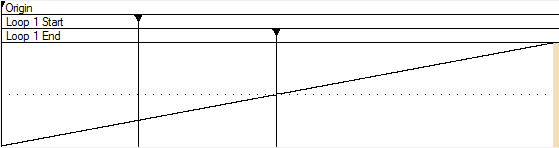
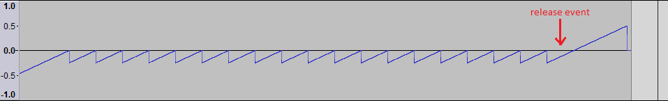
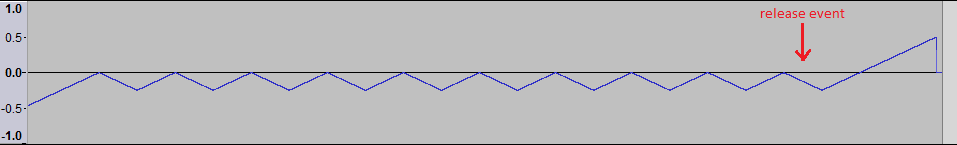

Sampled Oscillator
The sampled oscillator generates audio from a stored audio data stream, called a "sample". The stream can be of any length and either mono or stereo. The oscillator walks through the stream at a rate determined by the stream's sampling rate, the output sampling rate, the streams natural frequency, and the pitch being generated at that point in time. Linear interpolation is used for non-unity ratios.
Samples may optionally contain loops, which are defined by a start point, an end point, and a directional mode - either unidirectional or bidirectional. The sampled oscillator repeats a looped portion of the sample data until the corresponding release event occurs. At that point, the current iteration of the loop is allowed to complete, and then sampling continues as if the loop were not specified.
To graphically convey loop behavior, an (inaudible) slowly ramping sample is created in the example file, and a portion is specified as a loop:

Figure 1: Sample with loop
The score contains a single note with a short duration. If unidrectional looping was specified, the output is:

Figure 2: Unidirectional output
For bidirectional output, the result is:

Figure 3: Bidirectional output
The undirectional and bidirectional demonstration files can be downloaded.
Finding loop endpoints that sound good is something of an art.